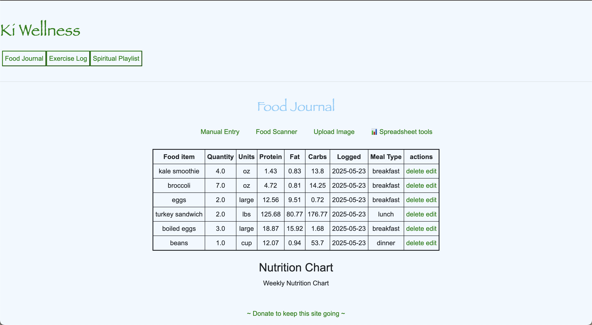
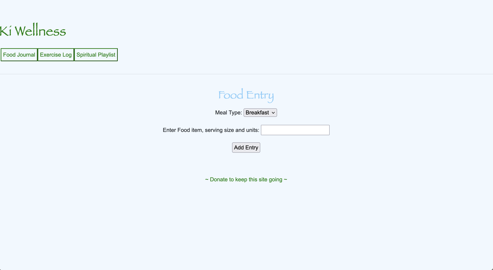
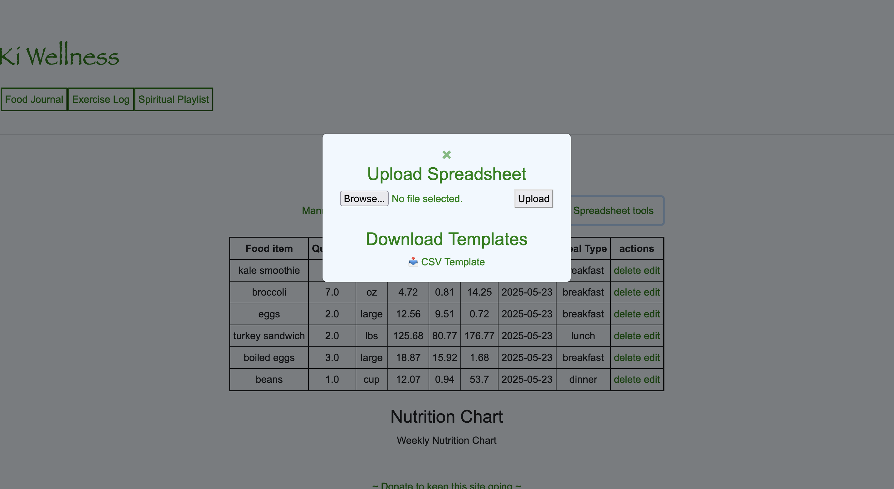
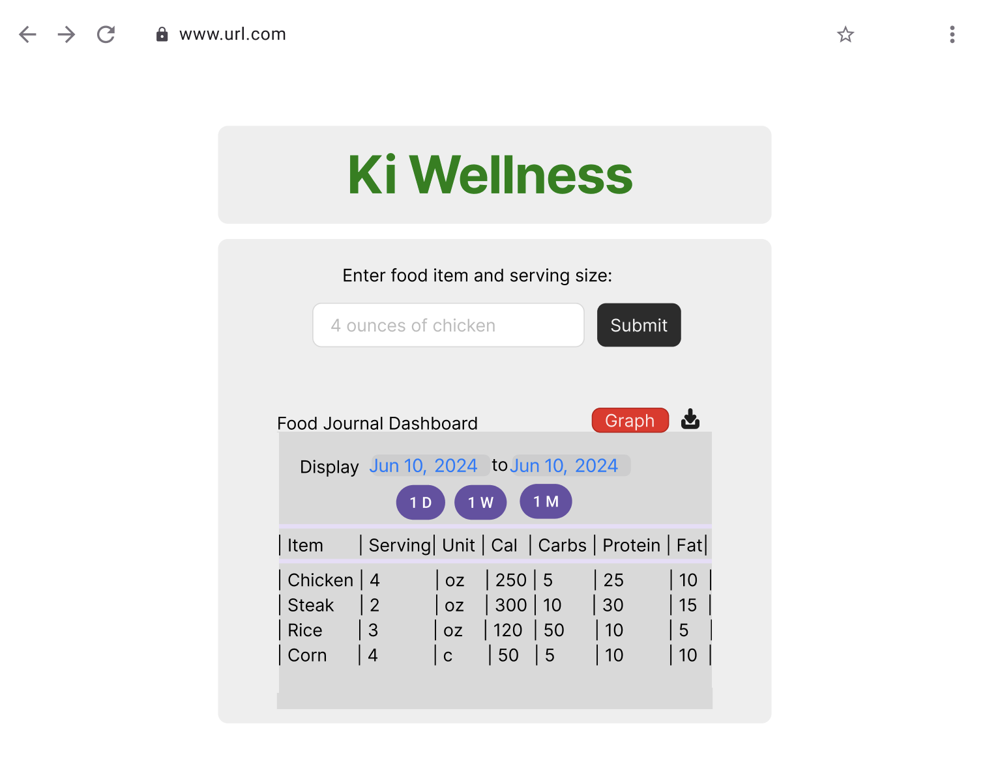
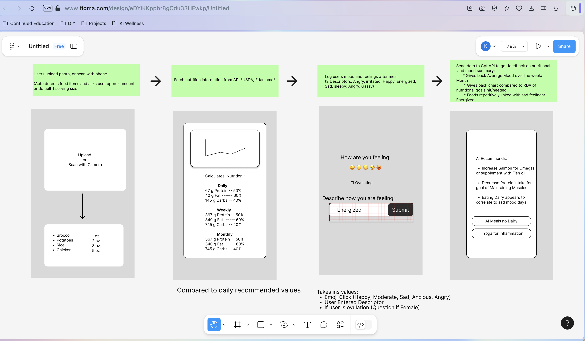

AI Food Journal
A full-stack, AI-powered nutrition tracking platform combining intelligent macro tracking, real-time data visualization, and personalized meal recommendations using modern web technologies.
Role: Full Stack Developer | Focus: AI Integration, API Architecture, and Data-Driven UX
Nutritionix API
Project Highlights
- Engineered a complete CRUD architecture for user-specific food logging.
- Integrated Nutritionix API for real-time macro and micronutrient lookups.
- Leveraged OpenAI API to generate AI-driven meal and supplement recommendations.
- Built interactive data visualizations for nutrient trends over time.
- Implemented secure authentication with user-specific data isolation.
- Designed a mobile-first, responsive UI with TailwindCSS.
Gallery

Interactive Macro Dashboard

Dynamic CRUD Food Entry Form

CSV & Image Upload Pipeline

Initial UX Wireframe

High-Fidelity Design Concept
Why It Matters
AI Food Journal isn’t just a logging tool — it’s a proof-of-concept for integrating AI into everyday health tracking. It demonstrates the ability to design, develop, and deploy a full-stack application that merges multiple APIs, scalable backend logic, and data-rich front-end visualization into a seamless user experience.
Key Engineering Takeaways
- Mastered API consumption patterns and integration within Flask applications.
- Applied JWT authentication and authorization for multi-user data privacy.
- Optimized a Python-based full-stack architecture for maintainability and scalability.
- Developed expertise in responsive design and UX principles using TailwindCSS.
- Strengthened skills in data-driven product design and iterative development.